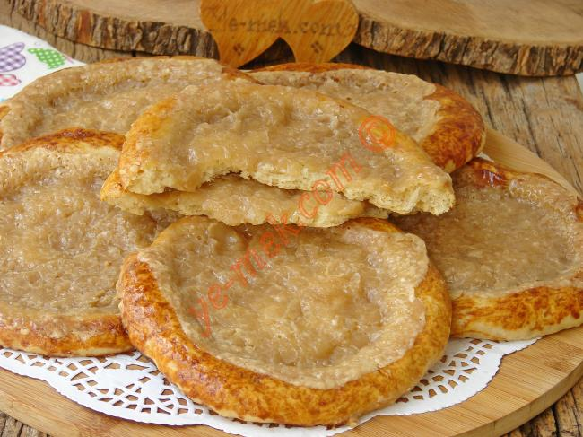
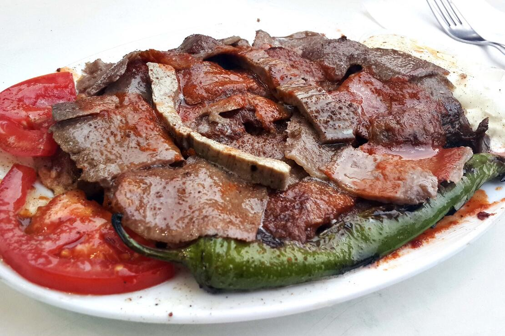
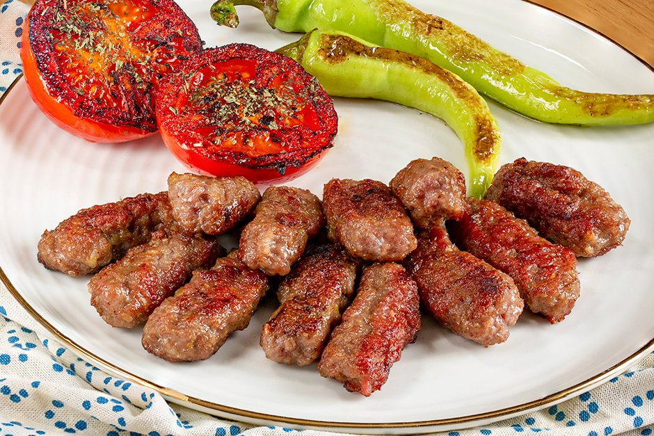
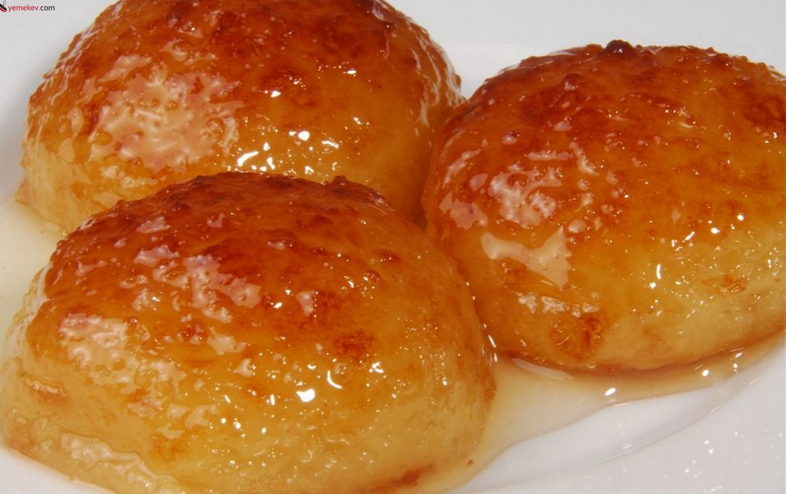

tahinli pide
A tahini roll or tahini bread roll (Armenian: Թահինով Հաց, Greek: ταχινόπιττα or τασιηνόπιττα, Turkish: tahinli çörek) is a sweet pastry found commonly in the cuisines of Armenia, Cyprus, Greece and Turkey. It's also found in Arab cuisine where it is called khubz tahini. They can be found in some of Los Angeles' Armenian bakeries, sometimes in smaller sizes than a typical tahini roll. They are popular as a street food in Cyprus. The dough includes sugar and oil and has been described as having a texture between a bread and a cookie. It is leavened with yeast and can be baked after the first rise. Sometimes the pastry may be soaked in syrup made with sweeteners like sugar and honey, and flavored with cinnamon. While not required by all recipes, cinnamon is sometimes added to the tahini filling.
iskender
İskender kebap is one of the best-known dishes of northwestern Turkey. It takes its name from its inventor, İskender Efendi, who lived in Bursa in the late 19th century Ottoman Empire. The dish consists of döner kebab prepared from thinly cut grilled lamb topped with hot tomato sauce over pieces of pita bread and generously slathered with melted sheep butter and yogurt. Tomato sauce and melted butter are generally poured over the dish, at the table.
inegöl köfte
İnegöl köfte, is grilled meatballs (köfte) specific to İnegöl, Bursa. It was created by Balkans people, a Turkish immigrant who came from Balkans[citation needed] to İnegöl in the late 19th century. Kneaded in round shape, the meatballs are cooked on a grill. Fame of the İnegöl meatballs has spread throughout Turkey. Production of the İnegöl meatballs started in the 1930s and quickly spread all over the country. The most important feature of the Inegol Meatballs is that no seasoning is used. Each meatball is between 12 and 15 grams and is round. Some places make it flat as well. İnegöl meatballs consist of veal, lamb, salt, sodium-bicarbonate and onion mixture in specific proportions. Prepared meatballs are refrigerated for 2–3 hours and they are ready to be cooked.
kemalpaşa
Kemal Pasha dessert (Turkish: Kemalpaşa tatlısı) is a Turkish dessert dish. It originates from the district of Mustafa Kemalpaşa, Bursa, in Turkey. Traditionally it is made using a cheese variety that is particular to the region. The dessert is prepared from a dough of flour, unsalted cheese, semolina, egg, water and baking powder. The dough is formed into small balls that are fried and then boiled in syrup. It can be eaten fresh or dried. In dried form it is often packaged in boxes of 24-50 portions. It is served with cream in winter and with ice cream in summer.
rakı

Raki or rakı (/rɑːˈkiː/, /rɑːˈkuː/, /rɑːˈkɜːr/, Turkish pronunciation: [ɾaˈkɯ]) is a sweetened, often anise-flavoured, alcoholic drink that is made in Albania, and popular in Turkic countries, Turkey, Greece and in the Balkan countries as an apéritif. It is often served with seafood or meze. It is comparable to several other alcoholic beverages available around the Mediterranean and the Middle East, e.g. pastis, ouzo, sambuca, arak and aguardiente. In Crete tsikoudia is a pomace brandy that is sometimes called rakı. It is used to make rakomelo, which is flavoured with honey and cinnamon. Rakomelo is served warm during winter months.